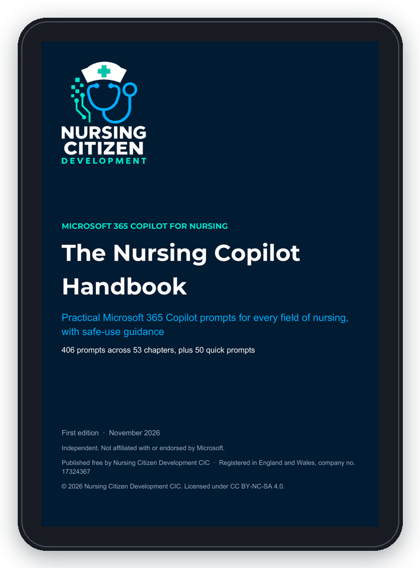
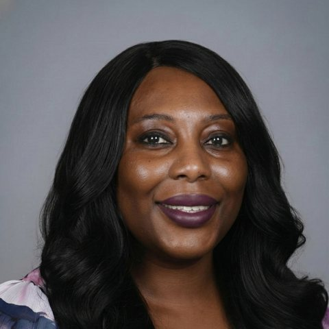
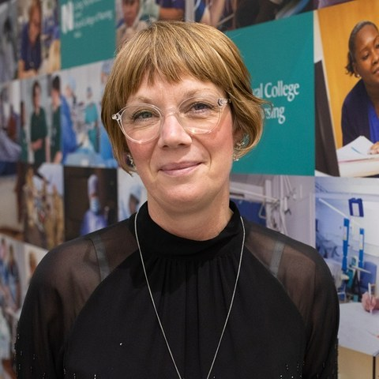

Building the blueprint
Open standards that describe the nursing process in a form computers can follow, so nursing data is safe and shareable from the start.
Nurse-led · Not-for-profit · Open
Nursing Citizen Development is a nurse-led movement helping every nurse, nursing associate, student and support worker understand, use and build AI safely, so that when AI comes to the ward, it speaks our language.
A nurse citizen developer is a nurse who understands the technology in their practice well enough to question it, use it safely and help build it.
Open standards that describe the nursing process in a form computers can follow, so nursing data is safe and shareable from the start.
AI that is tested for bias, including skin tone bias, so that technology narrows health inequalities instead of widening them.
Technology that serves, rather than severs, the human connection at the heart of nursing, grounded in person-centred practice.
AI is already in nursing, well beyond one product. We help nurses understand each kind, ask the right questions and keep people at the centre.
Copilot, ChatGPT, Claude, Gemini and others: what each is good for, and which you can use with work information.
Compare tools VoiceTools that listen and write notes. What to check before you rely on a draft, and what to tell the person in your care.
Using AI scribes EquityFrom pulse oximetry to skin tone in images: how bias gets into AI, and how nurses can spot and challenge it.
Equity and AI Images and videoCreating patient information and teaching material with AI, accessibly and without misleading anyone.
Beyond text AgentsAI that carries out tasks for you. Where it saves time, and where a nurse must stay in the loop.
Agents explained CheckA quick interactive check of tool, information and purpose, before you type anything in.
Run the checkNurses already think in Assess, Plan, Implement, Evaluate. The Prompt Cycle uses the same steps to get safe, useful results from any AI assistant: Copilot, ChatGPT, Claude, Gemini or the tool your organisation has approved. Choose a step to see how one request improves.
Before"Write a leaflet about falls."
With Assess"Write a falls leaflet for older people going home from our ward, and their families. Some readers have a learning disability, so use easy read style."
Start with the person: who is it for, and what matters to them?
Before"Write a falls leaflet for older people…"
With Plan"…Use only the attached NICE guideline. Add nothing it doesn't say. One A4 page, reading age 9, with five short headings."
Ground it in evidence and decide the shape before the AI starts.
Before"…One A4 page, reading age 9."
With Implement"…Don't include any patient details or clinical advice for individuals. Show me your draft and list anything you weren't sure about before finishing."
Set red lines and a checkpoint, so you stay in control.
BeforeCopy, paste, print.
With EvaluateCheck every line against the guideline. Is it accurate, kind and inclusive? Could it identify anyone? Is it fit to share? If not, refine and go round again.
Review the output as you would evaluate care.
Our resources are licensed under Creative Commons BY-NC-SA 4.0. Put them on your intranet, use them in training and adapt them for your service. Just credit us and don't sell them.
See how our resources map to the NHS AI and Digital Healthcare Technologies Capability Framework

Our first free handbook focuses on Microsoft 365 Copilot, the AI tool most NHS staff now have. 406 practical prompts for every field of nursing, with safe-use guidance, built on the nursing process and mapped to the NMC Code. Includes a searchable prompt index, a CPD log for revalidation and a printable safe-use card.
Download the handbook freeAI through the nursing process: safe-use checks, Copilot guidance, field pages, equity and interactive tools such as "Can I use this tool?".
Open the toolkit PromptsSearch starter prompts by field of nursing and by stage of the nursing process, each with its safe-use level.
Find a prompt LearningFree, checked courses for building your AI and digital skills, from first steps to building your own tools.
Find a courseAlongside our learning resources, we are building open standards and research prototypes with nurses, educators and developers.
The Open Nursing Core: an open FHIR implementation guide that describes the nursing process in a form systems can share.
The NHS Unified Nursing Validator: a research prototype that checks documentation against the standard for safety, equity and person-centred language.
Building the standard into data infrastructure, so that unsafe or biased AI-generated records are stopped before they are stored.
Exploring how clean, equitable nursing data could support earlier recognition of risk, with nurses leading the questions.
Our projects are open research and education prototypes. They are not medical devices and are not for use in clinical decision-making.
Founder, Nursing Citizen Development CIC · Registered Learning Disability Nurse
Founder of Nursing Citizen Development and author of The Nursing Copilot Handbook. Lead architect of the Open Nursing Core. Member of the NMC Professional Strategic Advisory Group and the BMJ Future Health Committee.
LinkedInSupporters share their expertise in a personal, unpaid capacity. They hold no governance role or financial interest in Nursing Citizen Development CIC, and their involvement does not represent the views of their employers, NHS organisations or universities.
Practice education and preceptorship
Over 21 years' experience and an MBA. Committed to helping international nurses settle and thrive in the UK, and to empowering staff to build their own digital solutions through his C.A.P. approach: Community, Adaptability and Perseverance.
LinkedIn
Learning Disability Nurse & health equity advocate
A Queen's Nurse and Fellow of the Royal College of Nursing. Kumbi exposed skin tone bias in wound care and developed training to tackle it, earning the 2023 Trojan Mouse Award.
LinkedInSenior Lecturer in Adult Nursing · SFHEA
BSc Adult Nursing course leader and Nursing Practice Lead at a London university, with a passion for technology and innovative simulation in nursing education.
LinkedInNursing workforce & retention
More than 20 years in nursing, including community nursing, tissue viability and preceptorship leadership. An RCNi editorial board member and honorary lecturer at City, University of London, and a champion for inclusive, kind and compassionate leadership.
LinkedIn
Chief Executive, Foundation of Nursing Studies · Visiting Professor, University of Surrey
Senior nurse leader, Queen's Nurse, Fellow of the Royal College of Nursing and former Deputy Chief Nurse at Public Health England. A champion of nursing as a STEM discipline, person-centred workplace cultures and health equity, she actively supports early-career nurses to grow as future leaders, nurse citizen developers and change agents.
LinkedInSenior Lecturer · Founder, British Sikh Nurses
An award-winning Queen's Nurse and PhD researcher tackling health inequalities. MNurse programme leader at the University of Sunderland in London and a member of the UK Government's Race Equality Engagement Group. Named among the NHS's 75 most influential nurses.
LinkedInGeneral Practice Nurse · Founder, NurseAghoghoCares CIC
A nurse, educator, speaker, published author and health equity advocate passionate about advancing health equity within Black communities, promoting preventative healthcare and empowering the next generation of nurses. A former Clinical Simulation Teacher championing cultural competence in pre-registration nursing education, she founded NurseAghoghoCares CIC and Learn With Nurse Aghogho to provide culturally responsive health education, mentorship and career guidance to student and early-career nurses.
LinkedInSenior Lecturer in Mental Health Nursing · Keele University
Dr Niki Simbani is a Senior Lecturer in Mental Health Nursing at Keele University's School of Nursing and Midwifery. A Registered Mental Health Nurse (RMN) with extensive clinical experience in acute inpatient mental health care, she is passionate about improving patient care and reducing restrictive practices through approaches such as the Safewards model. Her teaching spans undergraduate and postgraduate nursing programmes, and her academic interests include clinical supervision, mental health nursing education, and the promotion of psychological safety in healthcare settings. Her research has focused on clinical supervision in acute inpatient mental health environments.
LinkedIn"We are not just users of technology. We are the builders, architects and guardians of healthcare's digital future."
Use our free resources with your staff and students, or ask about a Copilot Safe Start session for your team.
Talk to usHelp us keep nurse-led AI resources free and open, and grow our open standards and research.
Support our workShare ideas, corrections and case studies, or contribute to our open projects.
Share your ideas